ドライヘッドスパサロン 微睡（まどろみ）
AI動画モックアップ v1
株式会社ランバード ／ 2026-08-18 作成 ／ 45秒・全13シーン・16:9
実写風
45秒 / 13シーン
目的：来店・集客
CTA：公式LINE（QR）＋住所
女性7：男性3
▶ 動画プレビュー（45秒）
※静止画をつないだプレビューです。BGM・ナレーションはこの段階では入れていません（方針確定後に載せます）。
🎥 参考にした動画


📋 案件概要
🎯 訴求ポイント
① 神社の境内にあるという立地 — 他店が絶対に真似できない一番の武器。中盤の「鳥居のカット」を転換点に据えました。
② 癒しではなく“自分への投資” — 仕事のパフォーマンスを保つために通う場所、という位置づけ。
③ お昼寝を促す暗さ — 実際の環境をそのまま活かし、お顔と手元にだけ光を当てています。
④ ホットアイマスク＋アフタータイム — 実際に使っているものを、施術中ずっと着けたまま描いています。
② 癒しではなく“自分への投資” — 仕事のパフォーマンスを保つために通う場所、という位置づけ。
③ お昼寝を促す暗さ — 実際の環境をそのまま活かし、お顔と手元にだけ光を当てています。
④ ホットアイマスク＋アフタータイム — 実際に使っているものを、施術中ずっと着けたまま描いています。
🧑 登場人物（AIオリジナル顔）
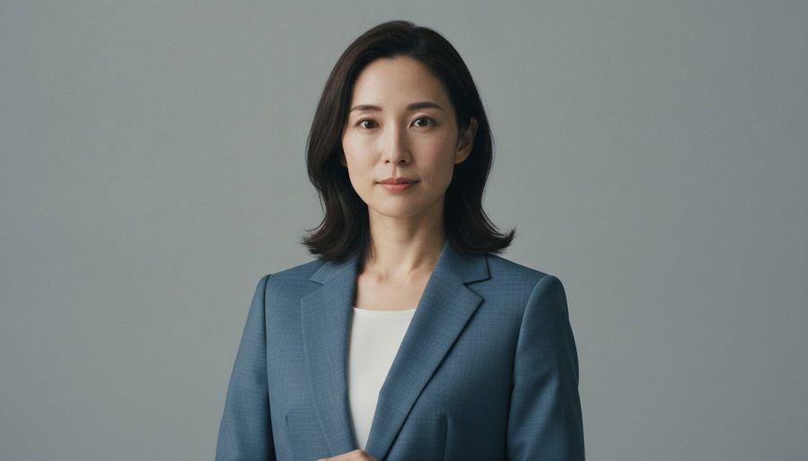
主役：女性経営者（30代後半）
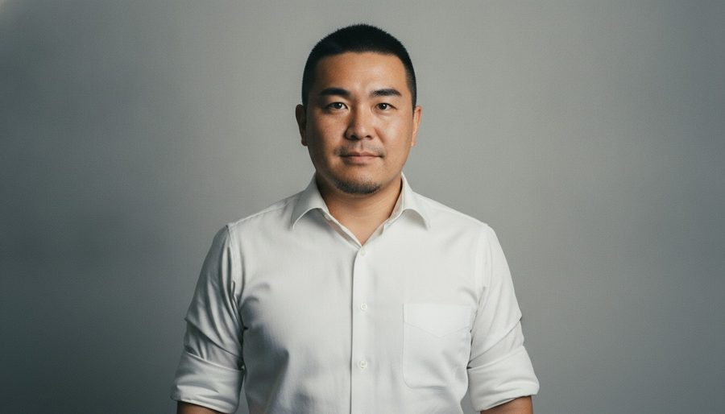
後半：男性管理職（40歳前後）
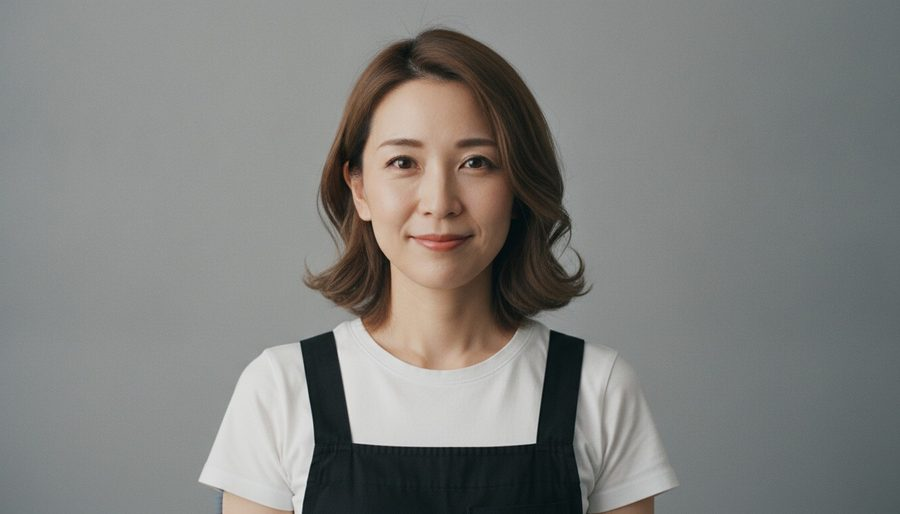
セラピスト
📽 シーン構成（全13シーン・45秒）
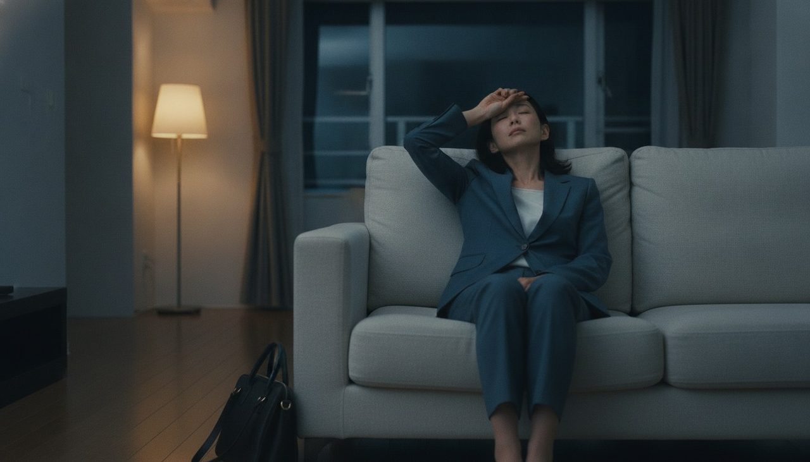
S10.0–3.5s／フック
寝ても、抜けない。
ナレ：頑張った日ほど、頭が休まらない。
絵：夜。帰宅した女性経営者が、バッグを置いたまま暗いリビングのソファに沈み込む。
絵：夜。帰宅した女性経営者が、バッグを置いたまま暗いリビングのソファに沈み込む。
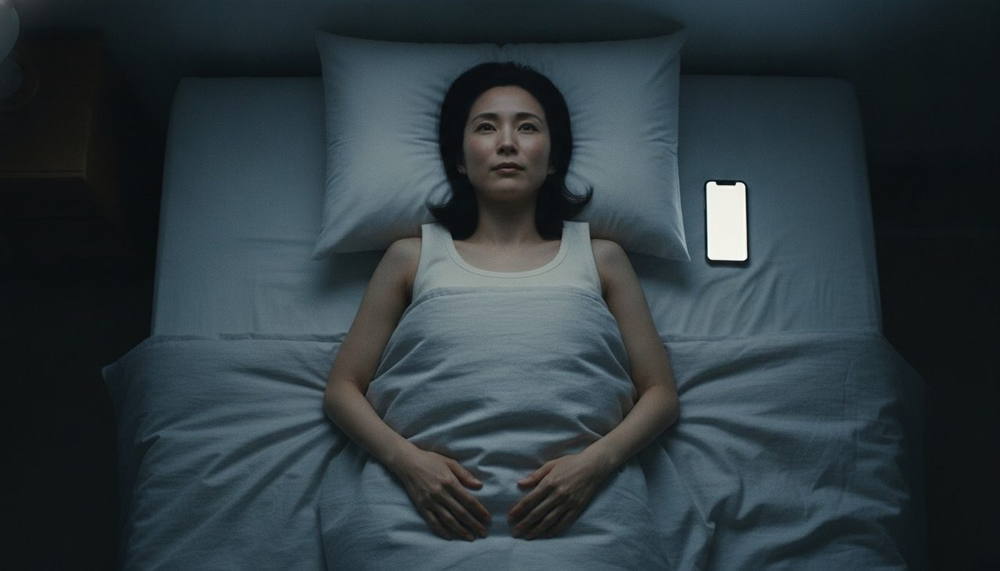
S23.5–7.0s
ナレ：そんな夜が、続いていませんか。
絵：ベッドの上。天井を見上げたまま眼が冴えている。枕元のスマホの光だけが白い。
絵：ベッドの上。天井を見上げたまま眼が冴えている。枕元のスマホの光だけが白い。
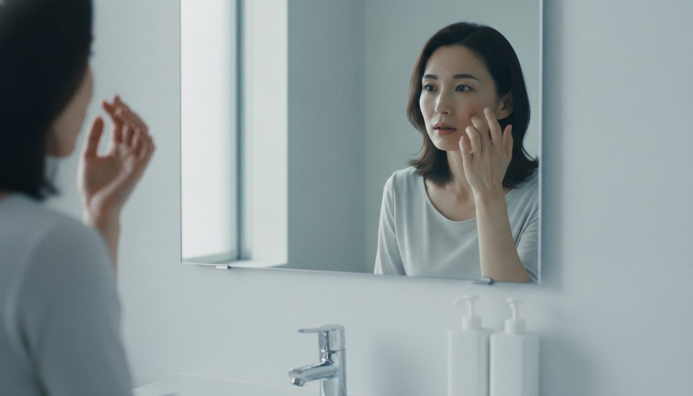
S37.0–10.0s
体が資本。だから、メンテナンス。
絵：朝の洗面所。鏡に映る自分の顔を見て、小さく息をつく。「そろそろ、整えないと」。
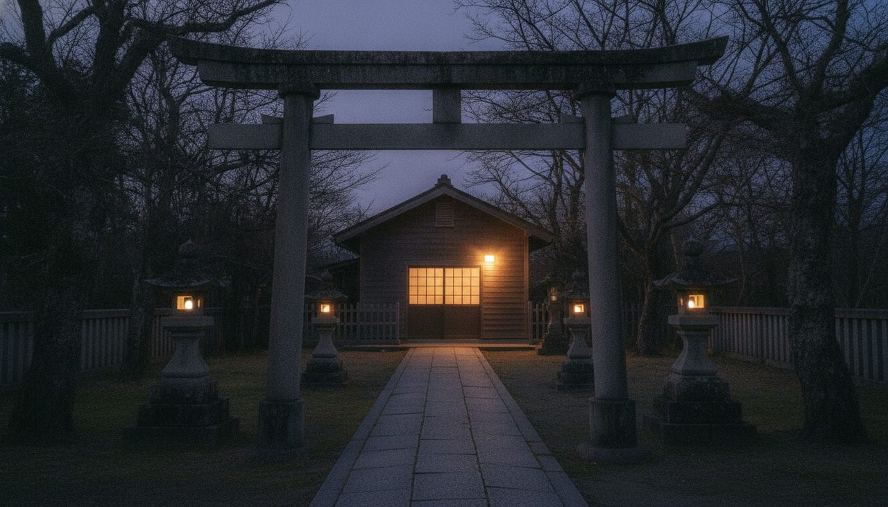
S410.0–14.0s／★転換点
釧路・神社の境内に。
ナレ：釧路、神社の境内に、ひとつのサロンがあります。
絵：夕暮れの鳥居と石畳の参道。その先に、ひとつだけ灯った窓。ここが本動画の一番の武器です。
絵：夕暮れの鳥居と石畳の参道。その先に、ひとつだけ灯った窓。ここが本動画の一番の武器です。
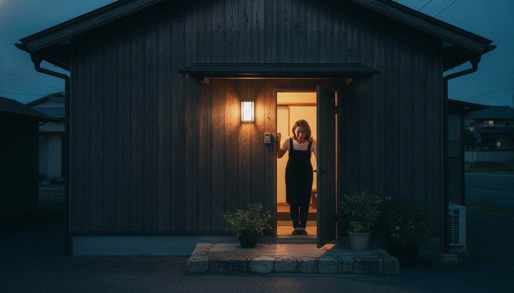
S514.0–17.5s
ドライヘッドスパサロン 微睡
ナレ：ドライヘッドスパサロン、微睡。
絵：木の扉が開き、暖かい光。セラピストが会釈で迎える。
絵：木の扉が開き、暖かい光。セラピストが会釈で迎える。
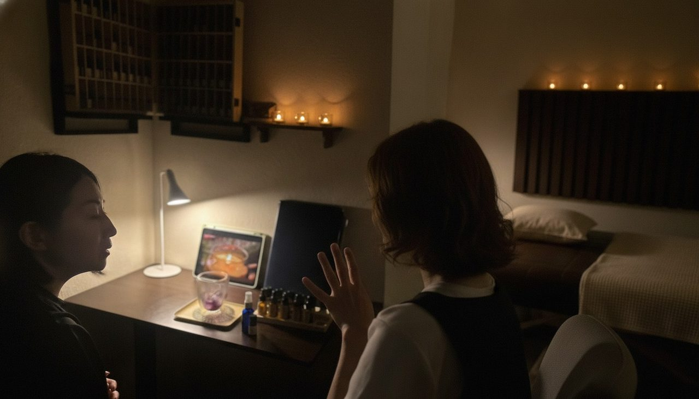
S617.5–21.0s
今日の疲れを、少しだけ聞かせてください。
絵：短いカウンセリング。デスクランプの灯り、アロマの小瓶、iPad。お預かりした店内のお写真をそのまま再現しています。
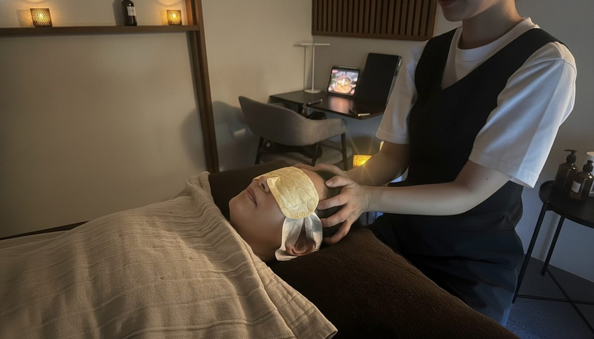
S721.0–24.5s
ナレ：灯りを落とした静けさの中で、
絵：施術。ホットアイマスクを着けたまま、頭に両手が添えられる。
絵：施術。ホットアイマスクを着けたまま、頭に両手が添えられる。
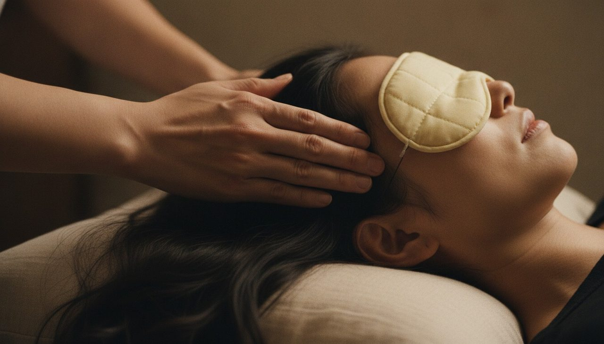
S824.5–28.0s
ナレ：頭の重さを、ほどいていく。
絵：指先のクローズアップ。側頭部をゆっくり押し広げる動き。
絵：指先のクローズアップ。側頭部をゆっくり押し広げる動き。
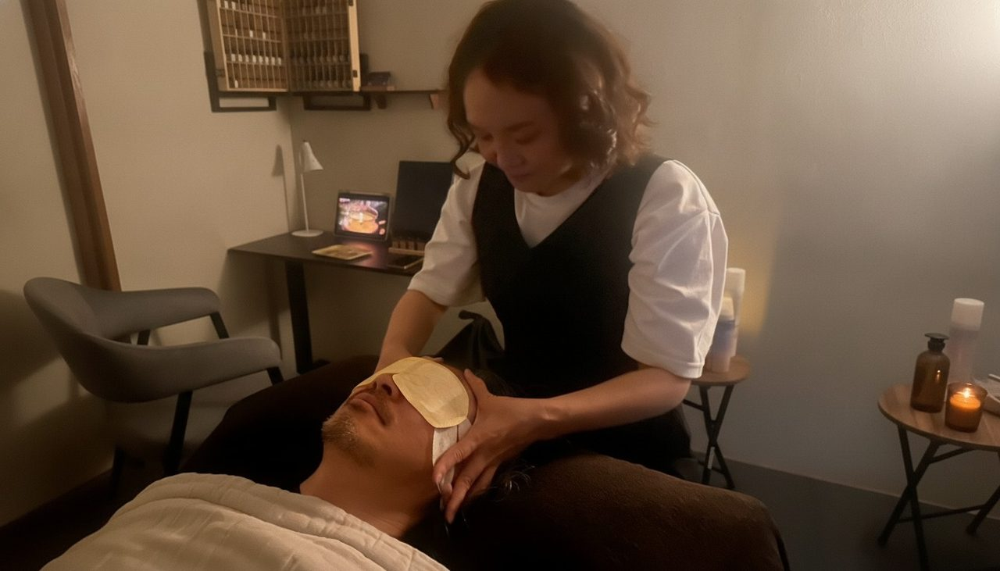
S928.0–31.5s
眠ってしまって、大丈夫です。
絵：男性客の施術。眉間の力が抜けていく。男性はここで初めて登場します。
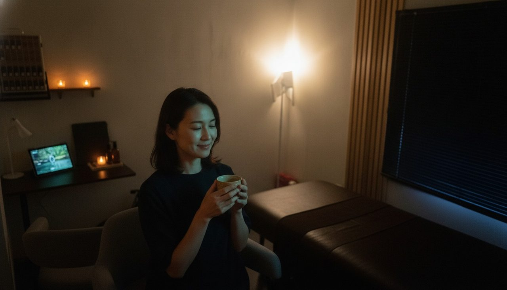
S1031.5–35.0s
絵：アフタータイム。iPadのヒーリング映像の光の中で、温かい飲み物を両手で包む。
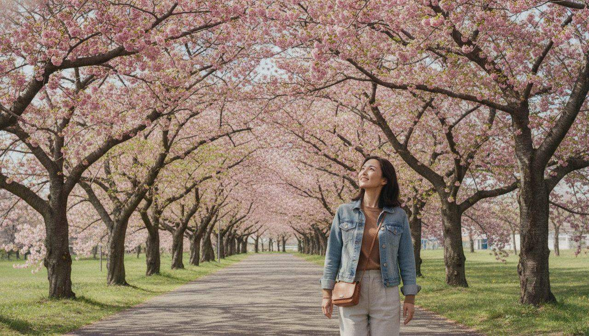
S1135.0–39.0s／After
ナレ：眠りが変われば、
絵：休日の柳町公園、釧路の桜並木。オフの私服（デニムジャケット）で軽やかに歩き、見上げて笑う。
絵：休日の柳町公園、釧路の桜並木。オフの私服（デニムジャケット）で軽やかに歩き、見上げて笑う。
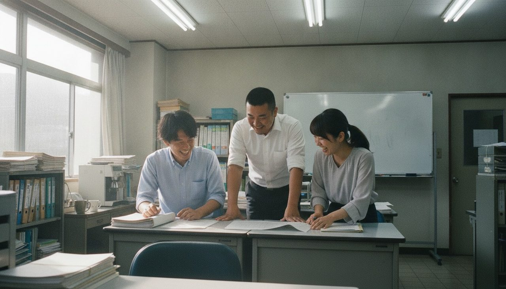
S1239.0–42.0s／After
最高の自分で、明日へ。
ナレ：明日の自分が、変わる。
絵：昔ながらのオフィスで、部下2人と笑い合う管理職。表情に余裕がある。
絵：昔ながらのオフィスで、部下2人と笑い合う管理職。表情に余裕がある。
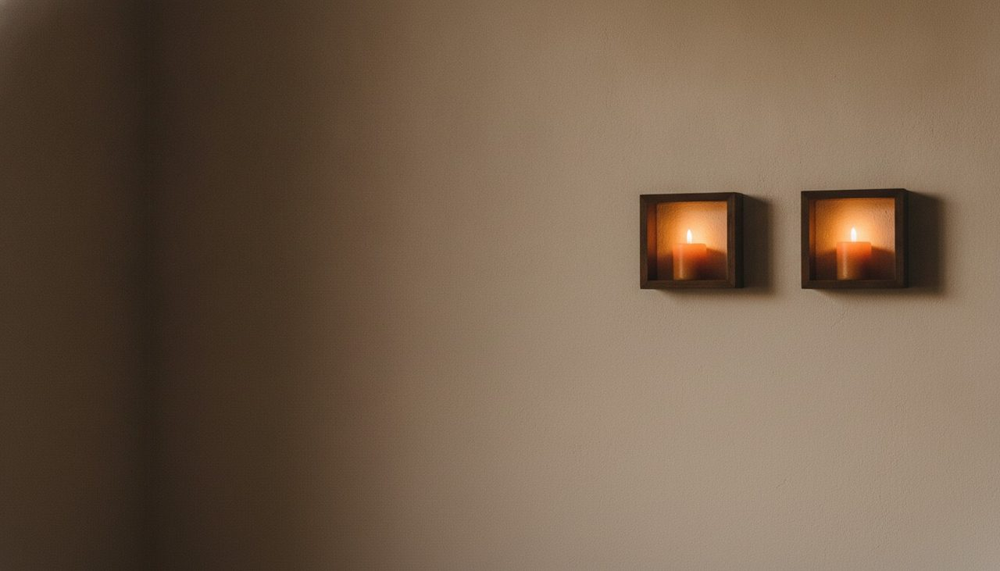
S1342.0–45.0s／エンドカード
ドライヘッドスパサロン 微睡 ／ 北海道釧路市堀川町5-35 ／ ご予約はLINEから
ナレ：ご予約は、LINEから。
絵：暗闇にキャンドルの灯りひとつ。公式LINEのQRコードと住所のみ。
絵：暗闇にキャンドルの灯りひとつ。公式LINEのQRコードと住所のみ。
🪝 フック案（S1の差し替え候補）
A（今回採用） 帰宅した女性経営者が暗いリビングのソファに沈み込む ／ テロップ「寝ても、抜けない。」
B 深夜のベッド。天井を見つめたまま眼が冴えている顔のアップ ／「『眠れない』んじゃない。『休めていない』。」
C 鳥居からスタート。参道の先に灯りがひとつ ／「釧路の神社に、眠りに来る大人がいる。」
D 施術中の指先のクローズアップから始める ／「頭は、自分ではほぐせない。」
※Cは立地の意外性が最も強く、広告としての「刺さり」は一番大きい可能性があります。ご希望があれば差し替えます。
B 深夜のベッド。天井を見つめたまま眼が冴えている顔のアップ ／「『眠れない』んじゃない。『休めていない』。」
C 鳥居からスタート。参道の先に灯りがひとつ ／「釧路の神社に、眠りに来る大人がいる。」
D 施術中の指先のクローズアップから始める ／「頭は、自分ではほぐせない。」
※Cは立地の意外性が最も強く、広告としての「刺さり」は一番大きい可能性があります。ご希望があれば差し替えます。
🎙 ナレーション全文（45秒・約135字）
頑張った日ほど、頭が休まらない。
そんな夜が、続いていませんか。
釧路、神社の境内に、ひとつのサロンがあります。
ドライヘッドスパサロン、微睡。
灯りを落とした静けさの中で、頭の重さを、ほどいていく。
眠りが変われば、明日の自分が、変わる。
ご予約は、LINEから。
そんな夜が、続いていませんか。
釧路、神社の境内に、ひとつのサロンがあります。
ドライヘッドスパサロン、微睡。
灯りを落とした静けさの中で、頭の重さを、ほどいていく。
眠りが変われば、明日の自分が、変わる。
ご予約は、LINEから。
🎨 演出のキモ
① 前半＝寒色の夜／後半＝自然光の色味転換で「変化」を体で感じてもらう。
② 鳥居のカットを中盤の転換点に置く。ここが「微睡にしかない画」＝広告の武器。
③ 暗さと見やすさのバランス。実際の環境（お昼寝を促す暗さ）を守りつつ、お顔と手元にだけ光を当て、 スマホの小さい画面でも何をしているか分かる明るさにしています。
④ テロップは動かさない。フェードインのみの静かな出し方で、世界観を壊さないようにしています。
② 鳥居のカットを中盤の転換点に置く。ここが「微睡にしかない画」＝広告の武器。
③ 暗さと見やすさのバランス。実際の環境（お昼寝を促す暗さ）を守りつつ、お顔と手元にだけ光を当て、 スマホの小さい画面でも何をしているか分かる明るさにしています。
④ テロップは動かさない。フェードインのみの静かな出し方で、世界観を壊さないようにしています。
⚠️ 動画に載せていないもの・審査対策
- お電話番号 … プライベートサロンとのことでしたので、掲載していません。
- 営業時間 … 今後変わる可能性があるとのことでしたので、公式LINEへのご案内に寄せています。
- 医療的な効果の断定（治る・改善する等）や疾患名 … YouTube広告の審査対策として使っていません。「休まらない」「眠りが変わる」といった体感の表現に留めています。
- 特定の芸能人のお顔 … 雰囲気のみを反映し、AIオリジナルのお顔で作成しています。
✅ ご確認いただきたいこと（仮置きを含みます）
- ① 全体の構成・流れ この方向性で進めて問題ないでしょうか。
- ② 修正したいシーン 気になる点があれば、シーン番号（S1〜S13）でお知らせください。
- ③ 代表様のご出演 お顔出しOK ／ 後ろ姿・手元のみOK ／ 出演なし（AI生成のみ） のどれをご希望でしょうか。
現状はAIオリジナルのお顔のセラピストで仮置きしています。 - ④ 屋号の表記 「ドライヘッドスパサロン 微睡」で統一しています。この表記で問題ないでしょうか。
- ⑤ 尺 45秒で仮置きしています（30秒／60秒のご希望があればお知らせください）。
- ⑥ ナレーション 女性・落ち着いた低めの声で仮置きしています（男性ナレ／ナレなしも可能です）。
- ⑦ BGM 静かなピアノ主体のヒーリング系で仮置きしています（後半で少しだけ明るく転調）。
- ⑧ 素材の追加（任意） より実物に寄せたい場合のみ、サロンの外観（鳥居・参道からの見え方）、施術の手元アップ、 アフタータイムのお飲み物 をいただければ該当カットを差し替えます。スマホは横持ちでお願いいたします。
※修正のご希望は、お手数ですがシーン番号と一緒に一度にまとめてお送りいただけますと幸いです。